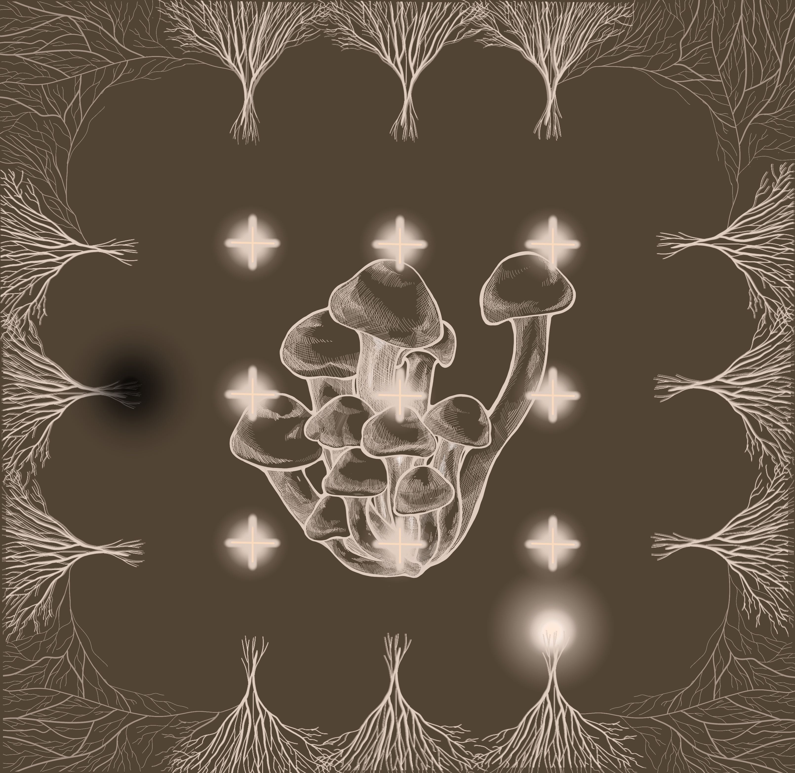

Global Game Jam 2023 · 2-Person TeamGlobal Game Jam 2023 · 2 人团队
Hypha
GGJ 2023 · Unity · One-Button Web Game
A one-button timing game made with an artist in 48 hours for Global Game Jam 2023. I handled game design and Unity development; Cheng Min created the art. The player times nutrient collection while avoiding hazards as the mycelium grows. 一个与美术搭档在 Global Game Jam 2023 的 48 小时内完成的单键时机游戏。我负责游戏设计与 Unity 开发，Cheng Min 负责美术。玩家把握时机收集养分、避开危险，让菌丝生长。
Problem问题
48 hours and two people: the game needed one idea small enough to finish and polish.
48 小时、两个人：玩法必须小到能做完并打磨好。
Decision决策
One input with two intentions, act or hold back, so timing carries the play instead of a large set of controls.
一个按键承担两种意图（出手或等待），让时机判断撑起玩法，而不是靠很多操作。
Outcome结果
A finished WebGL jam game, playable on itch.io.
完成的网页版 Jam 游戏，可以在 itch.io 上试玩。
Inside the game游戏画面

One input, two intentions一个输入，两种意图
The player watches the centre, clicks to absorb nutrients and waits when a hazard makes acting unsafe. The decision is when to act and when to hold back, so timing carries the interaction instead of a large set of controls.
玩家观察中心区域，点击吸收养分，在危险出现时等待。选择集中在何时行动、何时克制，因此交互由时机承担，而非依靠多种操作。
A scope that fits 48 hours适合 48 小时的范围
The game stays with one mechanic and an organic growth theme. Keeping the input simple concentrates the work on the relationship between timing, hazards and readable feedback, while leaving room for the two-person team to complete a browser build.
游戏围绕一个机制和有机生长的主题展开。简化输入后，工作集中在时机、危险与清晰反馈的关系上，也让两人团队有余力完成浏览器版本。
Contribution and delivery贡献与交付
I designed the mechanic and implemented the game in Unity with C#. Cheng Min supplied the art. The result is a small HTML5/WebGL jam game on itch.io, presented here as a focused collaboration rather than a large systems project.
我设计机制，并用 Unity 与 C# 实现游戏，Cheng Min 提供美术。最终成果是发布在 itch.io 的小型 HTML5/WebGL Jam 游戏，展示的是一次聚焦的协作与交付。